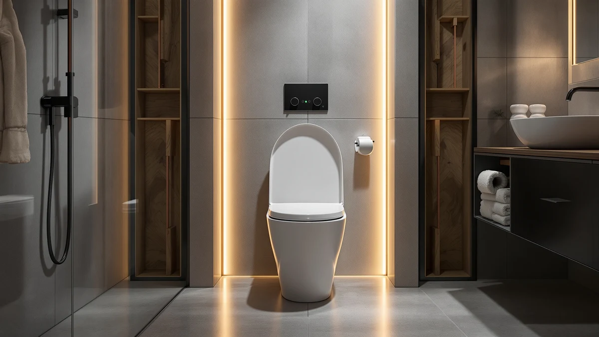

Toilet Chair vs Comfort Height (2026)
Prices and picks verified as of August 2026. Independent, reader-supported reviews.


Things to Know Before You Buy
- A toilet chair is a portable, freestanding commode; comfort height describes a taller toilet or seat that stays fixed to your existing bowl.
- Comfort height ranges from 17 to 19 inches, roughly chair height, versus 15 inches for a standard toilet.
- Toilet chairs cost more upfront but remove the need to walk to the bathroom at all.
- A comfort-height seat or riser is the cheaper fix if your bathroom is already accessible.
- Neither option replaces a doctor's recommendation for post-surgery or long-term mobility equipment.
The toilet chair vs comfort height choice affects anyone caring for a family member with limited mobility, recovering from a hip or knee replacement, or finding it harder to get up from a low seat. Both options raise the sitting position and add stability, but they solve different problems. A toilet chair is a portable commode you can place next to a bed or in a room with no plumbing nearby. A comfort-height toilet, or a seat and riser that mimic one, works with your existing bathroom and stays put.
We compared toilet chairs and comfort-height seats on stability, cost, and how each one fits into daily routines, drawing on manufacturer specifications, ADA height guidelines, and verified owner reviews rather than a lab test. Occupational therapists commonly recommend a seat height matched to the user's knee height, which is why the gap between a standard 15-inch bowl and a 19-inch commode chair matters more than it looks on paper. The right pick depends less on price and more on how far someone can safely walk.
Quick Answer
For most people managing a short recovery in a home with an accessible bathroom, a comfort-height seat or riser is the simpler, cheaper fix. For someone who cannot reliably walk to the bathroom, a bedside toilet chair remains the safer choice, even though it costs more and requires manual emptying. Weigh walking distance and budget against the picks below before deciding.
What is Toilet Chair?
A toilet chair, often called a bedside commode, is a freestanding frame with a seat, lid, and a removable pail underneath. Most models look like an armchair with hand rails on both sides and legs tall enough to match wheelchair or bed height. You place it wherever it is needed: next to a bed for overnight use, in a bedroom during recovery, or in any room without a nearby bathroom.
Because a toilet chair does not connect to plumbing, setup takes minutes and no tools. The pail lifts out for emptying and rinsing, which is the main daily maintenance cost of choosing this option over a fixed toilet. Frame heights typically run from 19 to 23 inches, and armrests plus a stable four-legged base make transfers from a bed or wheelchair more predictable than transferring to a low, unmodified toilet.
The tradeoff in any toilet chair vs comfort height comparison starts here: a commode chair solves the walking problem entirely, since the user never has to reach the bathroom. It does not solve odor control or the daily task of emptying the pail, and it takes up floor space in whatever room it occupies. Many buyers use one temporarily after surgery, then switch to a comfort-height bathroom setup once mobility improves.
What is Comfort Height?
Comfort height, also marketed as chair height or ADA height, describes a toilet bowl built between 17 and 19 inches from floor to seat, compared with 14 to 15 inches on a standard bowl. The added height means less bending at the knees to sit and stand, the same principle behind a toilet chair's raised frame, but built into a permanent fixture instead of a portable one.
You can reach comfort height three ways: buy a toilet already manufactured at that height, install a taller replacement seat like the LUXE elongated model in our picks below, or add a snap-on riser such as the KOHLER Hyten, which adds two to three inches to a bowl you already own. A riser is the fastest and cheapest route, though it narrows the opening slightly and some risers lack the sturdy hand supports a dedicated chair provides.
Comfort height keeps the bathroom looking and functioning like a normal bathroom, which matters for households that prefer not to have visible medical equipment. It only works if the person can still walk to the bathroom unassisted or with a walker, since the fixture itself does not move.
Head-to-Head: Build Quality & Durability
Build quality splits along different lines for each option. A toilet chair's frame is usually powder-coated steel or aluminum, rated for weight capacities between 250 and 400 pounds depending on the model, with rubber-tipped legs for grip on tile or vinyl flooring. The seat and lid are molded plastic, and the pail is typically polypropylene, which resists staining better than the frame's coating over years of use. Hinges and armrests take the most wear, since every transfer puts lateral pressure on them.
A comfort-height seat or riser depends on the durability of the toilet bowl itself plus whatever hardware secures the add-on. Elongated seats like the ones in our picks use reinforced hinges rated for repeated heavy use, and soft-close mechanisms reduce the slam-related cracking that shortens the life of budget seats. Risers clamp onto the existing bowl, so their weak point is the clamp mechanism rather than the seat material; a loose clamp is the most common complaint in verified owner reviews.
In a toilet chair vs comfort height durability comparison, the commode chair has more moving parts exposed to daily stress, while a seat or riser inherits the strength of a fixture that was already built to last for decades.
Head-to-Head: Price & Value
Price favors comfort-height solutions in almost every case. A basic elongated comfort-height seat runs $20 to $50, and a riser like the KOHLER Hyten costs around $44, both one-time purchases with no ongoing cost beyond occasional replacement. A soft-close upgraded seat such as the Bath Royale pushes closer to $70 but still undercuts most commode chairs.
A toilet chair typically costs $40 to $120 for a standard model, more for bariatric-rated or drop-arm versions built for wheelchair transfers. Add the ongoing cost of disposable liners if the household prefers them over rinsing the pail by hand. Insurance or Medicare sometimes covers a portion of a commode chair purchase with a physician's prescription, which can close the price gap for buyers managing a documented medical need rather than general comfort.
Head-to-Head: Use Experience
Day-to-day use is where the toilet chair vs comfort height decision usually gets settled. A toilet chair removes the walk to the bathroom, which matters most overnight, after surgery, or for anyone at real risk of falling on the way there. The cost is proximity: a commode chair sits in a bedroom or living space, and someone has to empty and rinse the pail regularly, a task that falls to a caregiver in many households.
A comfort-height seat keeps the bathroom experience close to normal. Sitting down and standing up takes less effort at the knees and hips, and the added height helps taller users too, not only those with mobility limits. Owners of elongated comfort-height seats consistently report an easier transfer from a wheelchair or walker compared with a standard low seat, according to product reviews on models like the LUXE TS1008E.
Neither option removes the need for grab bars if balance is a concern. A comfort-height toilet without a rail still requires the user to steady themselves against a wall or vanity, while a toilet chair's armrests provide that support built in, one reason occupational therapists often pair a chair with a temporary recovery plan rather than a permanent one.
When to Choose Toilet Chair
Choose a toilet chair if the bathroom is far from the bedroom, on a different floor, or otherwise out of safe reach overnight. It also makes sense during the first weeks after hip, knee, or spine surgery, when a doctor has restricted how far or how often someone should walk unassisted. Caregivers managing a bedridden or wheelchair-bound family member get the most consistent value from a commode chair, since it can be positioned exactly where transfers happen.
A toilet chair is also the practical choice in a home where remodeling the bathroom is not an option, such as a rental unit or a temporary living situation. Look for a wide, stable base, locking wheels if the model has them, and a weight rating that comfortably exceeds the user's weight before buying.
When to Choose Comfort Height
Choose comfort height if the bathroom itself is accessible and the main issue is difficulty bending at the knees or hips to sit and stand. A riser or elongated comfort seat solves that in minutes without changing how the household uses the bathroom day to day. It suits older adults aging in place who want to stay ahead of mobility decline rather than react to a specific injury.
Comfort height also wins for households that value a bathroom that looks and functions normally, with no visible medical equipment and no daily emptying task. It is the better long-term investment if the person can reliably walk to the bathroom now and is expected to keep doing so, reserving a toilet chair for a future need rather than buying one preemptively.
Our Top Picks
These picks cover both ends of the toilet chair vs comfort height spectrum, from an elongated comfort-height seat to simpler, budget-friendly options for a straightforward comfort upgrade.

Editor’s Pick
LUXE TS1008E Elongated Comfort Fit
Best overall comfort-height upgrade, with a padded elongated seat and reinforced hinges rated for daily heavy use.
$49.99
Check Price on Amazon
Best Value
Soft Elongated Vinyl Toilet Seat
A budget-friendly way to soften an elongated bowl while you decide whether a taller fixture is worth the investment.
$24.20
Check Price on Amazon
Premium Choice
Soft Standard Vinyl Toilet Seat
A round-seat comfort option for standard bowls, a simple fix if your toilet is not elongated.
$21.25
Check Price on AmazonIs a toilet chair the same as a comfort height toilet?
No.
How much higher is comfort height than standard?
Comfort height typically measures 17 to 19 inches from floor to seat, about 2 to 3 inches taller than a standard 15-inch toilet, close to the height of a dining chair.
Frequently Asked Questions
Is a toilet chair the same as a comfort height toilet?
No. A toilet chair, also called a bedside commode, is a freestanding portable seat you place near a bed. A comfort height toilet is a taller fixture, or a riser on an existing bowl, that raises the seated position without adding a separate chair.
How much higher is comfort height than standard?
Comfort height typically measures 17 to 19 inches from floor to seat, about 2 to 3 inches taller than a standard 15-inch toilet, close to the height of a dining chair.
Do toilet chairs work without running water?
Yes. Most toilet chairs include a removable pail, which makes them useful at bedside overnight or anywhere plumbing is not within easy reach.
Can I add a riser to make my toilet comfort height?
Yes. A seat riser like the KOHLER Hyten adds two to three inches without replacing the toilet, though it narrows the bowl opening slightly compared with a seat manufactured at true comfort height.
Which option is safer after surgery?
A toilet chair placed at bedside removes the walk to the bathroom entirely. A comfort-height seat still requires that walk, but it offers a more stable, permanent transfer point once someone gets there. Ask a physician or occupational therapist which fits your specific recovery restrictions.
Final Verdict
There is no universal winner in the toilet chair vs comfort height debate, since each option solves a different problem. Choose a toilet chair if the walk to the bathroom is not safe or not possible right now. Choose comfort height, led by the LUXE elongated seat in our top pick, if the bathroom is already accessible and the goal is less strain getting up and down.